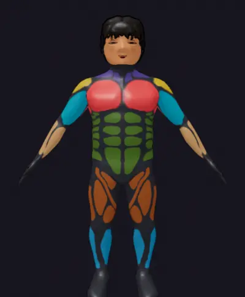
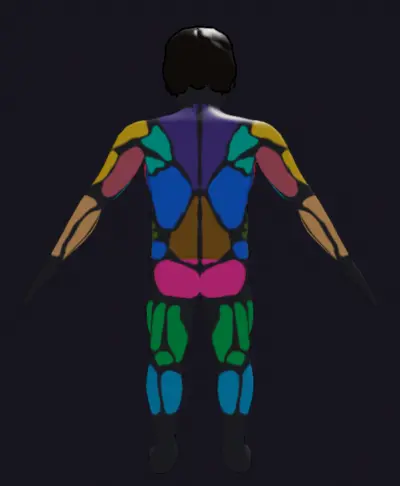
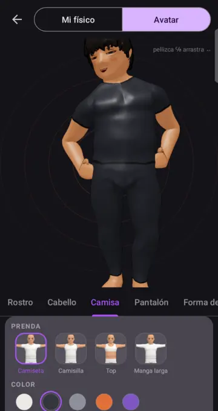

Tus músculos, sobre tu propio cuerpo
La gráfica circular de Distribución muscular deja paso a tu avatar. Cada grupo se pinta de su color, más vivo cuanto más lo entrenaste, y lo que no tocaste se queda en gris. Gíralo para ver la espalda; los porcentajes van debajo. También aparece en el resumen de cada sesión.



Tu avatar, a tu estilo
- Cabello: buzz cut, mullet y hongo, además del clásico de cada cuerpo, en siete colores.
- Ropa: camisa de manga larga, leggings y shorts. Cada prenda en blanco, negro, gris, naranja o morado, sin perder costuras ni bajos.
- Rostro vivo: parpadea, se alegra el día que entrenas y se cansa tras una sesión larga.
- Más espacio para el avatar: panel compacto y una miniatura en cada opción.
Todo lo que hace
Avatar 3D con tu forma
El cuerpo sale de tus medidas reales: cuello, pecho, cintura, cadera, brazos, muslos y pantorrillas mueven cada zona por separado, y el reparto entre grasa y músculo sale de tu porcentaje graso.
Forma de cuerpo
Seis siluetas que ensanchan o estrechan hombros, tórax y pelvis. Es el ancho del hueso, no la grasa. Cuerpo masculino y femenino, cada uno con su esqueleto.
Mapa muscular
Qué trabajaste en la semana, el mes o desde siempre, pintado sobre tu cuerpo en 15 grupos musculares, de frente y de espalda.
Rutinas y sesión guiada
Rutinas con series, repeticiones y peso objetivo, sobre un catálogo de 268 ejercicios. En la sesión cada serie llega pre-llenada; confirmas con un toque o ajustas.
Progresión automática
Compara la fuerza estimada de cada sesión con las anteriores y te propone cuándo subir peso: lineal, doble progresión, Greyskull o ninguna.
Cardio con GPS
Modo trote con podómetro y mapa en vivo, y la ruta dibujada al terminar. Mapas con MapLibre y OpenFreeMap, con respaldo cuando no hay conexión.
Aviso de salida del gym
Marca tu gimnasio en el mapa. Si te vas con la sesión abierta, la app te avisa y la cierra con tu hora de salida real.
Metas
Objetivos de peso, de medidas o de fuerza en un ejercicio, con un plan sugerido para llegar y aviso cuando estás cerca.
Estadísticas
Duración, cumplimiento y frecuencia semanal, más el análisis de tu físico: cintura-cadera, cintura-altura y porcentaje graso.
Tu cuenta en la nube
Rutinas, sesiones, cardio, metas, medidas y avatar viajan contigo. Entra desde otro teléfono y está todo.
Perfiles y búsqueda
Busca a otras personas y mira su avatar, su racha y las marcas que eligieron enseñar. Tus medidas no salen de tu teléfono.
Tus datos, con permiso
Al crear la cuenta cada consentimiento se pide por separado, conforme a la ley de protección de datos personales.
Novedades
Solo se distribuye la versión más reciente. Las anteriores quedan aquí como historial.
Cargando versiones…